Adjust the settings of the fish to your liking, and let the beauty of randomness do the rest.
Five kinds of fish
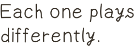
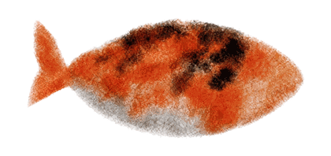
Normal
One sample.
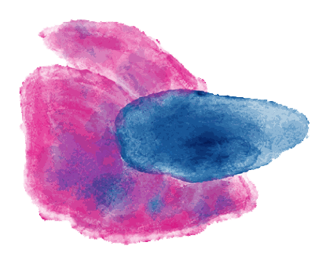
Sustain
Loops its sample, with a crossfade control.
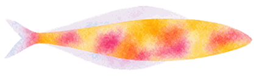
Multi
Swaps between multiple samples.
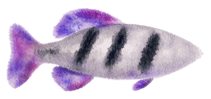
Bass
Designed for bass samples.
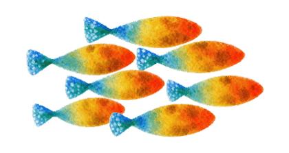
Chord
Plays its sample as a chord or arpeggio.
Effects
Drag and drop coral, and hear the fish adapt to the new habitat.
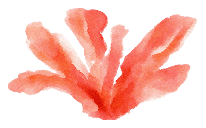
Reverb
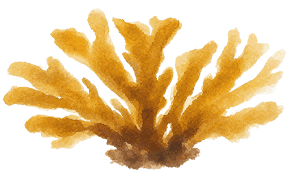
Delay
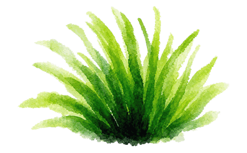
Phaser
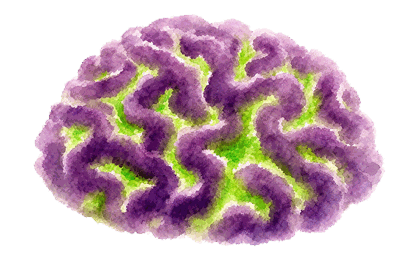
Flanger
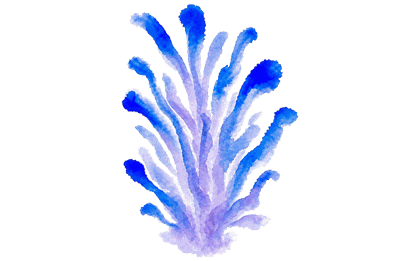
Distortion
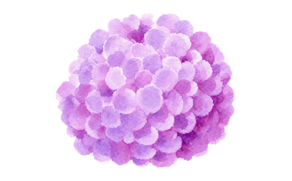
Freq Shift
Chorus
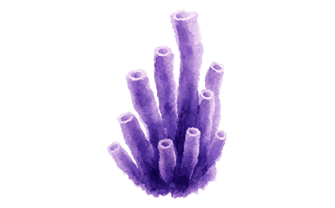
Filter
Shizen / Nagare
let the pond speak
stir the waters
In motion
Demo video goes here — see site/README.md.
A note
Hey guys! I’m Jayu, a producer who loves making nostalgic beats and
ambient music. The idea for Shizen came from chasing happy accidents, those
joyful moments in producing when something you didn’t plan turns out
better than what you did. “Shizen” translates as
“nature”, but it also carries a deeper meaning. It’s about
letting nature take its own course, allowing it to follow its own rhythm and
harmony. I think there is real beauty in embracing that randomness, and
it’s the life force behind this plugin. Oh, and I also really love fish!
Secure checkout by Lemon Squeezy. VAT and sales tax handled at checkout.
Requirements
macOS
10.13 or later on Intel, 11 or later on Apple Silicon
Windows
10 or later, 64-bit
Formats
VST3, AU, Standalone
Hosts
FL Studio, Ableton Live, Logic Pro, Bitwig, Reaper, Studio One
Updates
2.200.58 Sep 2026A fish out in the pond keeps its name readable in the palette. The stand-in dims the fish, not the label under it.
2.200.48 Sep 2026A saved capture opens straight in Finder with the file already selected, so it can go into a track on the next click. Shortcuts opens from a ? beside its heading.
2.200.38 Sep 2026On Random timing the division reads Minimum, because a note waits for the next line rather than falling on every one. Feel belongs to Tempo-Sync, and clears when a fish is switched to Random.
2.200.18 Sep 2026The standalone app has a face: a koi on washi paper, drawn from the pond's own artwork.
2.200.08 Sep 2026Shizen now installs as a standalone app as well as a plugin, so a pond can run without opening a DAW. The installer asks which formats you want.
2.199.07 Sep 2026Capture. The pond is always recording the last two minutes, so the take you were not recording is still there - keep the last 30 seconds, minute, or two.
2.198.97 Sep 2026Randomize works on every preset again, not only the four whose sample folder happened to exist. A fish's Level now fades it in the pond alone, leaving the palette legible.
2.198.87 Sep 2026A sample that will not load now says why - a file the plugin is not permitted to read reads differently from one in an unsupported format.
2.198.67 Sep 2026A Shortcuts panel in Global settings. Every gesture in the pond is Shift + click, and now it says so.
2.198.37 Sep 2026Universal on macOS - native on both Apple Silicon and Intel, and visible to hosts running under Rosetta.
2.198.06 Sep 2026A 75% window option, for screens the full size will not fit.
2.197.05 Sep 2026Signed and notarised under the Jayu Beats identity. Hosts may need one plugin rescan to pick it up.
2.196.05 Sep 2026Empty palette slots draw a fish and say what to do with it, and a sample dragged over a slot grows it rather than boxing it.
2.195.05 Sep 2026A new factory one-shot library, and nine factory presets that all load what they promise.
2.194.104 Sep 2026Fixed a crash: a reversed note could keep reading a sample buffer after it had been freed. Deleting the plugin mid-load could do the same.